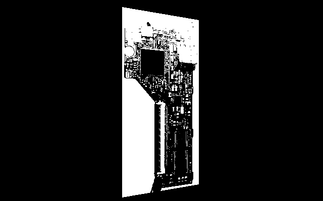

A PCB reverse engineering tool built on top of Electron .

Never got very far with it. But I learned about shaders and made a JSON-based file format for specifying traces and IC geometry with metadata attached.
Made in 2015